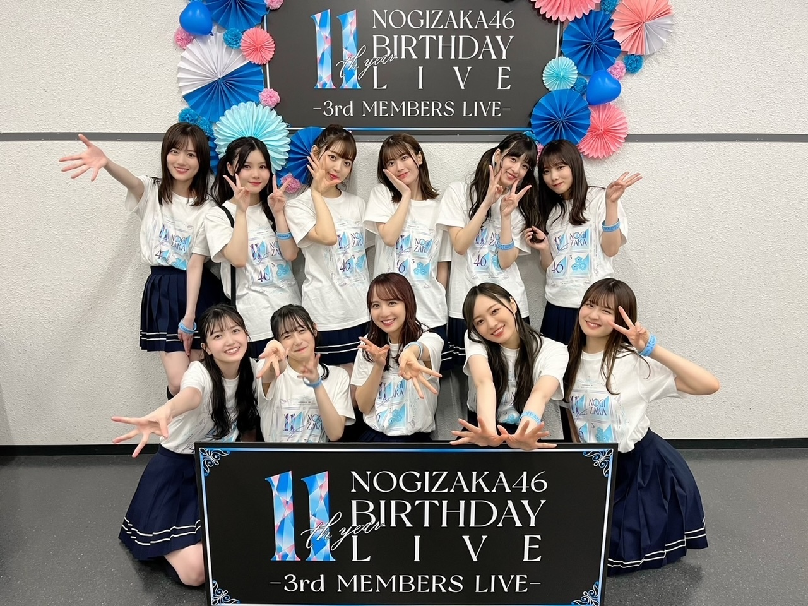
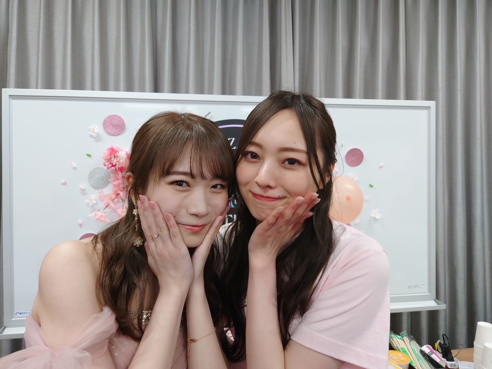
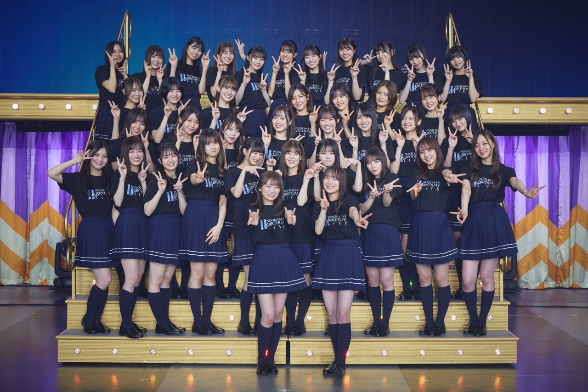
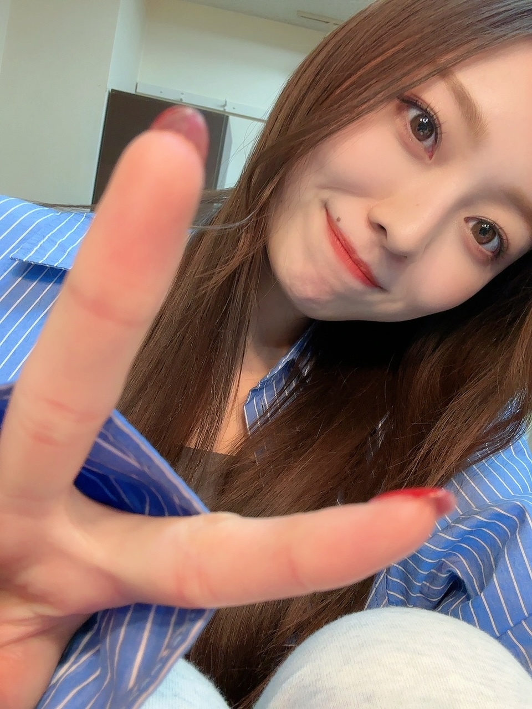

欲しい欲しいと先延ばしにした故、結局手に入らず、みたいなことがよくあります。
お久しぶりです！
梅澤美波です。
いかがお過ごしでしょうか〜
少し前になりますが、
お越しくださった皆様、
配信で観てくださった皆様、
本当にありがとうございました！
もう２週間が経ってしまった〜
これぞバスラ！という感覚を味わえた５日間でした。
４期生、５
どちらも鑑賞しましたが
みんなキラッキラしてたなあ〜
客席から見る乃木坂も、
やはり、とても好きです。
５期生の愛嬌と爆発力に震え、
４期生の風格と逞しさに痺れました。
期生は
そこからのバトンを受け取るのもあり、
かなりのプレッシャーもありましたが
気合と根気と経験で
皆の意見をギリギリまで出し合い、
何度もディスカッションしながら挑みました。
本番前はみんなそわそわしてたけど
終演後、皆が口を揃えて
楽しかった〜！って言ってた。
これが何より幸せな言葉で、光景。
出会えてよかったと、改めて！

そして、真夏さんの卒業コンサート。
どこを見てもいつ見ても、良い人。
優しく温かい愛のある人でした。
人に対する姿勢や
お仕事への向き合い方、
考え方や素の表情まで
全部が好きで、尊敬していました。
教えてもらったことが多すぎて、
感謝を伝えきれていない気がします。
これから続く関係の中で
返していきたい！
話していて、
ただただ幸せな気持ちにさせてくれる人です。
誰よりも幸せになって欲しい人！
自分勝手に生きて欲しい！
本当に、お疲れ様でした。

国民の嫁って言うけど、
本当に出会う人みんなを虜にしてしまう姫です。
そして、
きちんと言葉にして皆様へ届けるのに
だいぶ時間がかかってしまいました！
３代目キャプテンに就任致しました。
先日、初めてキャプテンとして
円陣の掛け声をしました。
普通を装っていたつもりだったけど
とんでもなく緊張してしまったー。
少しだけ、本音で書かせてください！
ずっと怖かったです！
かっこ悪いけど、
今日だけ言います！
たぶん、バレバレだったと思うので！
キャプテン就任を聞いたのは、
３２枚目シングルの選抜発表のとき。
自分でも、７年目にして
こんなに心を取り乱すことあるんだ！って思ったし
それからの毎日は、活動と向き合う中で
自分を保つ方法を 必死に探していたように感じます。
副キャプテンを務めていたこともあり
もしかしたらこの後キャプテンに
…って、
もちろんその考えは頭にありましたし
きっとファンの皆様も
ステージで発表され
弱々しいスピーチを続けた私に、
何を今更そんなにびびっているんだ、と
思った方も多いんじゃないでしょうか。
今、冷静に見て、私もそう思います！
でも、やっぱり全然、
気持ちを固めていたつもりだったけど
ただのつもりだっただけで、
準備なんて出来るものじゃなかったんですよね。
キャプテン就任を言い渡されてから
これだけの期間じゃ
あまりに足りなくて、
この立場になると分かって初めて
ひたすらに未来を想像して、震えました。初めての感覚。
自分がファンとして好きだった時代があり
そこから加入して６年半。
ここに全て注ぎ込んできたし、
並大抵の覚悟じゃ続けられない日々だったし
続けてこれた ここまでの毎日を振り返ると、
どれだけの人が乃木坂へ愛を注ぎ
支えてくださり、
時に自分を押し殺して 守り、
どれだけの涙や苦労を見てきたか。
今までの全てがフラッシュバックしてきて
私はそれらを守っていかなければいけないんだ、と
守るものの大きさに改めて気づいたんですね。
怖いという感情は、
大切が故に、感じたのものだと思います。
それにきっと、これからは
今まで通りでいかないことが増えてくるはず。
なんとなくそう思っていて、
そこで私が出来ることって
今までの経験だけじゃ乗り切れないなって
分かっていたから、
就任を聞いた時からしばらくは
プラスに考えを持っていくことが難しかったです。
でも、時が経ちまして
今は気持ち新たに前向きです！
やっと、本番の映像を見返したりも、出来ています！
真夏さんが、最後のスピーチで
生まれ変わってもまた乃木坂になりたいし、乃木坂のキャプテンを務めたいです。
って仰っていて、
その言葉が頭から離れなくて、
あまりにもかっこ良くて。
わたしも、この役目を終えるその日に
この言葉を心から言えるように、務めたいです。
これが今の私の、
キャプテンとして 一歩目の目標です！
自分なりに、
私にしかできないキャプテン像を見つけながら
励んでいきますので、どうか
これからの乃木坂46も、
よろしくお願い致します。
たくさんの温かい歓声を頂いて
ものすごく救われました！
やっぱり、生の声って、凄まじいパワー！
本当にありがとうございました。
色んなところでの励ましのメッセージも、見ています。
ありがとうございます！
後輩たちも、色んな言葉をかけてくれました。
弱っちい姿を見せてしまったけど
それはもう終わりで、
守れるように、強く在ります！

✌🏻
長々と失礼致しました〜
言葉にするって、難しいですね（笑）
でも、人の言葉はすごく心に残るものだから
大事なタイミングでしっかり
言葉にしなきゃあかんですね

さて！明日から
舞台「キングダム」
大阪公演頑張ってきます〜
では
また、書きます
Original：https://www.nogizaka46.com/s/n46/diary/detail/101276?ima=4932&cd=MEMBER